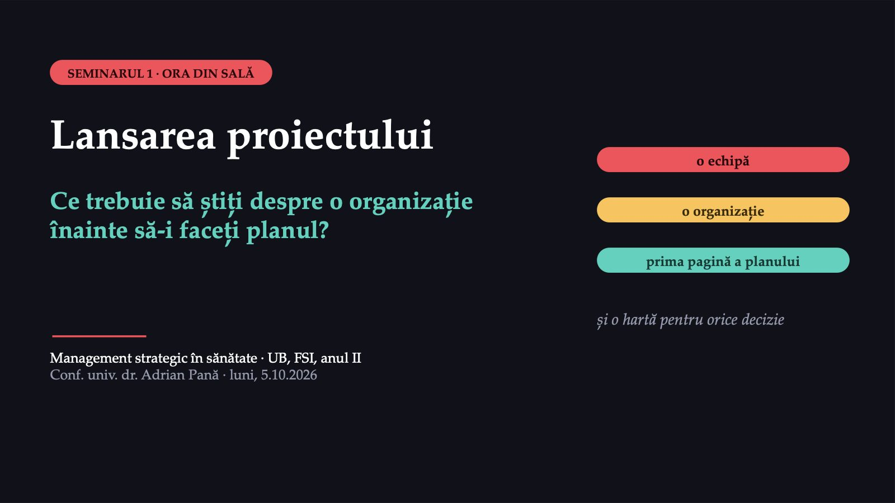
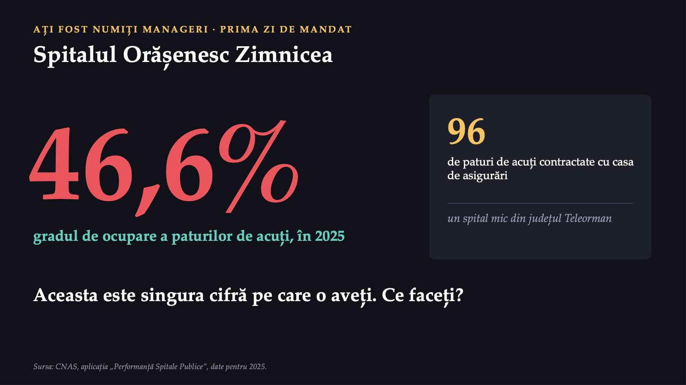
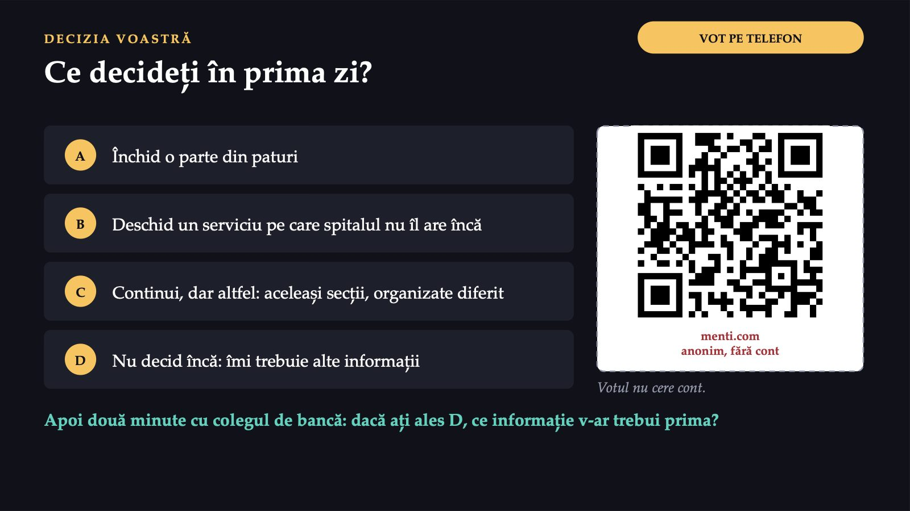
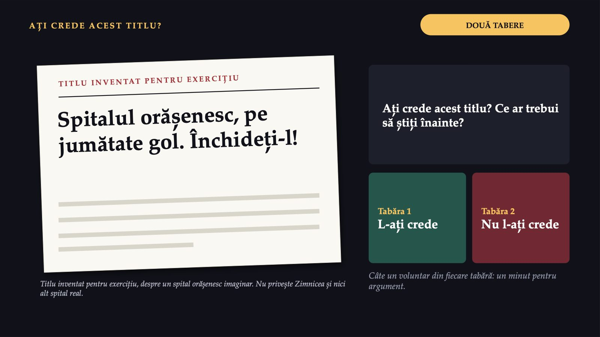
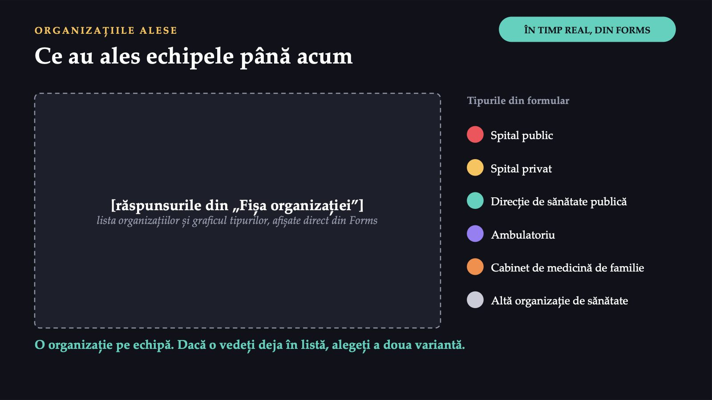
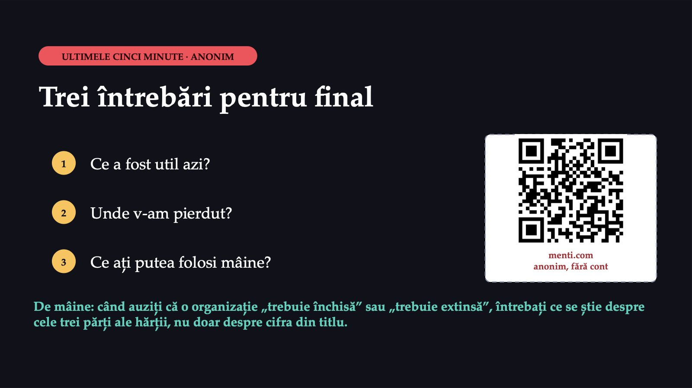

Lansarea proiectului

1 / 23Bine ați venit la primul seminar. Azi faceți trei lucruri: o echipă, o organizație și prima pagină a planului ei strategic. Planul echipei înseamnă 35% din nota finală; începe azi și se termină cu susținerea din ultimul seminar.
Ce faceți azi și ce predați la sfârșit
![ORA DIN SALĂ ȘI ORA ECHIPEI Ce faceți azi și ce predați la sfârșit O echipă Patru sau cinci colegi, aceiași tot semestrul. O organizație O organizație de sănătate reală din România, una pe echipă. Prima pagină Fișa organizației: cine este, ce face, ce se știe public despre ea. Un spital, o cifră Harta și titlul Echipa și organizația Testul Ghidul Bilet Mai mult de jumătate din timp lucrați voi: votați, discutați, formați echipa, completați testul. La sfârșit predați înscrierea echipei și testul. Ora a doua este a echipei; o puteți face acasă.](diapozitive/LP01/002.jpg) 2 / 23
2 / 23Seminarul are două ore: o oră în sală, cu toată grupa, și o oră de lucru al echipei, pe care o puteți face acasă. În sală, mai mult de jumătate din timp lucrați voi: votați, discutați cu colegul de bancă, formați echipa și completați testul. La sfârșitul orei predați două lucruri: înscrierea echipei și testul.
46,6%

3 / 23Imaginați-vă că ați fost numiți manageri ai Spitalului Orășenesc Zimnicea, un spital mic din județul Teleorman, cu 96 de paturi de acuți contractate cu casa de asigurări. În 2025, gradul lui de ocupare a paturilor de acuți a fost de 46,6%, potrivit datelor publicate de Casa Națională de Asigurări de Sănătate. Aceasta este singura cifră pe care o aveți în prima zi de mandat. Ce faceți?
Ce decideți în prima zi?

4 / 23Votați pe telefon, prin codul QR de pe ecran, o singură variantă: închid o parte din paturi, deschid un serviciu pe care spitalul nu îl are încă, continui, dar altfel (aceleași secții, organizate diferit) sau nu decid încă, pentru că îmi trebuie alte informații. Votul din sală nu cere cont. Apoi discutați două minute cu colegul de bancă: dacă ați ales ultima variantă, ce informație v-ar trebui prima? Distribuția voturilor apare pe ecran înainte de explicație.
Cifra spune cât, nu spune de ce
![NU DECID ÎNCĂ Cifra spune cât, nu spune de ce Spitalul și-a folosit paturile contractate mai puțin de jumătate din cât prevede norma. Sunt întrebări de verificat în surse publice, nu explicații cunoscute ale spitalului: S-a schimbat populația din jur? Aleg pacienții alte spitale: spitalul județean, spitalele municipale, spitale din București sau din județele vecine? Lipsesc medici pentru unele secții? Ar fi unele paturi mai utile pentru alt tip de îngrijire? Răspunsul la fiecare întrebare duce la o altă decizie. Înainte de orice decizie, trebuie să știți ce se întâmplă în jurul spitalului, ce poate face el și ce vrea să facă. Sursa: CNAS, aplicația „Performanță Spitale Publice”, date pentru 2025. Teleormanul are patru spitale publice generale de acuți.](diapozitive/LP01/005.jpg) 5 / 23
5 / 23Varianta cinstită este „nu decid încă”, iar seminarul spune de ce. Cifra arată un spital care și-a folosit paturile contractate cu casa de asigurări mai puțin de jumătate din cât prevede norma. Ea nu spune însă de ce. Ce ar putea explica o ocupare sub jumătate? Sunt întrebări de verificat în surse publice, nu explicații cunoscute ale acestui spital. S-a schimbat populația din jur? Aleg pacienții alte spitale: spitalul județean, unul dintre cele două spitale municipale ale județului, fiindcă Teleormanul are patru spitale publice generale de acuți, spitalele din București sau din județele vecine? Lipsesc medici pentru unele secții? Ar fi unele paturi mai utile pentru alt tip de îngrijire? Răspunsul la fiecare întrebare duce la o altă decizie. Înainte de orice decizie, trebuie să știți ce se întâmplă în jurul spitalului, ce poate face el și ce vrea să facă.
Primele trei variante au un nume
![LEGĂTURA CU PRIMUL CURS Primele trei variante au un nume Încetăm Ce facem acum și ar trebui să încetăm? în vot: închid o parte din paturi Începem Ce nu facem și ar trebui să începem? în vot: deschid un serviciu pe care spitalul nu îl are încă Continuăm, dar altfel Ce facem și ar trebui să continuăm, dar altfel? în vot: continui, dar altfel Întrebările gânditorului strategic. Ca să alegeți între ele, aveți nevoie de mai mult decât o cifră. Sursa: Ginter PM, Duncan WJ, Swayne LE. The Strategic Management of Health Care Organizations, 2018, cap. 1, p. 17.](diapozitive/LP01/006.jpg) 6 / 23
6 / 23Cursul a dat numele acestor decizii, sub forma a trei întrebări pe care și le pune un gânditor strategic: ce facem acum și ar trebui să încetăm, ce nu facem și ar trebui să începem, ce facem și ar trebui să continuăm, dar altfel. Primele trei variante ale votului sunt chiar aceste trei răspunsuri. Ca să alegeți între ele, aveți nevoie de mai mult decât o cifră.
Zimnicea, alături de celelalte trei
![JUDEȚUL TELEORMAN · SPITALELE PUBLICE GENERALE DE ACUȚI · 2025 Zimnicea, alături de celelalte trei Spitalul Grad de ocupare (%) Cât de complicate sunt cazurile (indice) Spitalul Județean de Urgență Alexandria 60,9 1,34 Spitalul Municipal Turnu Măgurele 50,6 1,02 Spitalul Municipal „Caritas” Roșiori de Vede 60,4 1,23 Spitalul Orășenesc Zimnicea 46,6 0,93 Zimnicea tratează cazurile cele mai simple (0,93), spitalul județean pe cele mai complicate (1,34). Un spital orășenesc tratează, de obicei, cazuri mai simple decât unul județean, deci indicele mic nu dovedește singur nimic. Unde se tratează pacienții cu probleme mai grave din zona Zimnicea? (de verificat în surse publice) Sursa: CNAS, aplicația „Performanță Spitale Publice”, date pentru 2025. Paturi și cazuri de acuți; indicele compară cazurile cu un nivel de referință egal cu 1.](diapozitive/LP01/007.jpg) 7 / 23
7 / 23Tabelul adaugă un indiciu pe care cifra singură nu îl dădea. Dintre cele patru spitale publice generale, spitalul din Zimnicea tratează cazurile cele mai simple, cu un indice de 0,93, iar spitalul județean pe cele mai complicate, cu un indice de 1,34. Un spital orășenesc tratează, de obicei, cazuri mai simple decât unul județean, deci indicele mic nu dovedește singur nimic. Rămâne o întrebare de verificat în surse publice: unde se tratează pacienții cu probleme mai grave din zona Zimnicea? Întrebarea privește ce se întâmplă în jurul spitalului și cine mai oferă aceleași servicii, nu paturile.
Gradul de ocupare a paturilor
![TERMENUL 1 Gradul de ocupare a paturilor Definiția din ghidul CNAS: procentul din paturile contractate cu casa de asigurări care sunt efectiv ocupate. În limbaj de zi cu zi: cât de folosite au fost paturile contractate ale spitalului în cursul anului. Exemplu: Zimnicea, 2025 sub jumătate din paturile contractate 46,6% jumătate Cum se calculează exact cifra publicată: în nota seminarului, caseta „Pentru curioși” (nu intră la examen). Sursa: CNAS, ghidul aplicației „Performanță Spitale Publice” și datele pentru 2025.](diapozitive/LP01/008.jpg) 8 / 23
8 / 23Primul termen nou: gradul de ocupare a paturilor. Este indicatorul publicat de casa de asigurări pentru spitalele publice: procentul din paturile contractate cu casa de asigurări care sunt efectiv ocupate. În limbaj de zi cu zi: cât de folosite au fost paturile contractate ale spitalului în cursul anului. Exemplu: la Zimnicea, în 2025, gradul de ocupare a fost sub jumătate. Cum se calculează cifra publicată și ce nu înseamnă ea găsiți în nota seminarului, în caseta „Pentru curioși”, care nu intră la examen.
Harta analizei situaționale
![TERMENUL 2 · TREI ÎNTREBĂRI ÎNAINTE DE ORICE PLAN Harta analizei situaționale 1 Analiza externă Ce ar trebui să facă organizația, pornind de la ce se întâmplă în jurul ei? 2 Analiza internă Ce poate face, cu oamenii și resursele pe care le are? 3 Direcția strategică Ce vrea să facă, potrivit misiunii, viziunii și valorilor ei? → alegerea strategiei, dintre mai multe alternative → planul de implementare abia apoi Analiza situațională, în limbaj de zi cu zi: ce ar trebui să facem, ce putem face și ce vrem să facem. Sursa: Ginter PM, Duncan WJ, Swayne LE. The Strategic Management of Health Care Organizations, 2018, cap. 1, p. 18–19.](diapozitive/LP01/009.jpg) 9 / 23
9 / 23Al doilea termen nou: analiza situațională. Înainte de orice plan, organizația face o analiză în trei părți. Analiza externă arată ce ar trebui să facă, pornind de la ce se întâmplă în jurul ei. Analiza internă arată ce poate face, cu resursele și oamenii ei. Direcția strategică arată ce vrea să facă, potrivit misiunii, viziunii și valorilor ei. Abia după aceste trei analize vin alegerea strategiei dintre mai multe alternative și planul de implementare. În limbaj de zi cu zi: ce ar trebui să facem, ce putem face și ce vrem să facem.
Unde puneți fiecare informație?
![VOT PE TELEFON · PATRU RUNDE UN SPITAL ORĂȘENESC IMAGINAR Unde puneți fiecare informație? SPITAL INVENTAT PENTRU EXERCIȚIU · NU ESTE ZIMNICEA ȘI NICI ALT SPITAL REAL 1 Populația orașului a scăzut în ultimii ani. 2 Spitalul nu are medic anestezist cu normă întreagă. 3 Consiliul local vrea ca spitalul să rămână deschis pentru urgențe. 4 Spitalul județean este la mai puțin de o oră de drum. Trei variante, la fiecare informație: analiza externă · analiza internă · direcția strategică Votul nu cere cont. Informațiile sunt inventate. Niciuna nu privește Spitalul Orășenesc Zimnicea. menti.com anonim, fără cont](diapozitive/LP01/010.jpg) 10 / 23
10 / 23Pe ecran apar, pe rând, patru informații despre un spital orășenesc imaginar, construit pentru exercițiu: nu este Spitalul Orășenesc Zimnicea și nici alt spital real, iar informațiile sunt inventate. Pentru fiecare informație, votați pe telefon unde o puneți pe hartă: analiza externă, analiza internă sau direcția strategică. După fiecare vot, distribuția apare pe ecran.
Patru informații, trei locuri pe hartă
![HARTA ANALIZEI, COMPLETATĂ · SPITAL INVENTAT Patru informații, trei locuri pe hartă Analiza externă ce se întâmplă în jurul spitalului și nu depinde de el 1 Populația orașului a scăzut. 4 Spitalul județean, la mai puțin de o oră. Analiza internă ce poate face spitalul cu oamenii pe care îi are 2 Fără medic anestezist cu normă întreagă. Direcția strategică ce vor cei care conduc și finanțează organizația 3 Consiliul local vrea spitalul deschis pentru urgențe. Cele trei părți formează harta analizei situaționale. Proiectul vostru parcurge întregul proces strategic.](diapozitive/LP01/011.jpg) 11 / 23
11 / 23Prima și ultima dintre aceste informații inventate sunt externe: ele descriu ce se întâmplă în jurul spitalului imaginar și nu depind de el. A doua este internă: spune ce poate face spitalul cu oamenii pe care îi are. A treia ține de direcția strategică: spune ce vor cei care conduc și finanțează organizația. Aceste trei părți formează harta analizei situaționale. Proiectul vostru parcurge întregul proces strategic, etapă cu etapă: fiecare dintre seminariile următoare acoperă o porțiune din el. Aria de servicii și competitorii, din seminarul 3, este tot analiză externă, dar mai aproape de organizație.
Etapele procesului strategic
![PROIECTUL VOSTRU, SEMINAR CU SEMINAR Etapele procesului strategic 2 seminarul 2 Analiza mediului extern Ce ar trebui să facă organizația, pornind de la ce se întâmplă în jurul ei? 3 seminarul 3 Aria de servicii și competitorii Tot analiză externă, mai aproape de organizație: pe cine servește și cine mai oferă aceleași servicii? 4 seminarul 4 Analiza internă și punctele tari și slabe Ce poate face organizația, cu ce are? 5 seminarul 5 Direcția strategică și alternativele Ce vrea să facă și ce cale alege? 6 seminarul 6 Planul de acțiune și indicatorii Cine face ce, până când și cum se vede dacă s-a făcut? 7 seminarul 7 Susținerea planului Ce propune echipa și de ce? Azi, seminarul 1: organizația și fișa ei. În seminarul 7, echipa își susține planul.](diapozitive/LP01/012.jpg) 12 / 23
12 / 23Acestea sunt etapele procesului strategic, iar proiectul vostru le parcurge una câte una. Seminarul al doilea: analiza mediului extern. Al treilea: aria de servicii și competitorii, care este tot analiză externă, dar mai aproape de organizație: pe cine servește organizația și cine mai oferă aceleași servicii. Al patrulea: analiza internă și sinteza punctelor tari și slabe. Al cincilea: direcția strategică și alternativele. Al șaselea: planul de acțiune și indicatorii. În al șaptelea, echipa își susține planul.
Spitalul orășenesc, pe jumătate gol. Închideți-l!

13 / 23Pe ecran este un titlu de ziar inventat pentru exercițiu, despre un spital orășenesc imaginar al cărui grad de ocupare ar fi, ca în exemplul de la început, sub jumătate: „Spitalul orășenesc, pe jumătate gol. Închideți-l!”. Titlul nu privește Zimnicea și nici alt spital real. Ați crede acest titlu? Sala se împarte în două tabere: cei care l-ar crede și cei care nu l-ar crede. Câte un voluntar din fiecare tabără își spune argumentul într-un minut.
144
![CE LIPSEȘTE DIN TITLU O cifră, folosită greșit Sursa și anul LIPSESC Nu spune cine a publicat cifra și pentru ce an. Calculul LIPSEȘTE Nu spune că gradul de ocupare se calculează pe paturile contractate cu casa de asigurări. Analiza SARE PESTE EA Trece de la o informație internă direct la o decizie, fără analiza externă și fără direcție. 144 din 339 spitale publice cu valoare publicată, mai mult de 4 din 10, au avut paturile de acuți ocupate sub 60%, în 2025. Media simplă a gradului de ocupare: 63,1% Nu este o excepție: decizia despre un spital cere și o privire asupra politicii de sănătate. Sursa: CNAS, „Performanță Spitale Publice”, 2025.](diapozitive/LP01/014.jpg) 14 / 23
14 / 23Titlul pornește de la o singură cifră, ca exemplul de la început, dar o folosește greșit. Nu spune sursa și nici anul. Nu spune că gradul de ocupare se calculează pe paturile contractate cu casa de asigurări. Mai ales, titlul sare de la o informație internă direct la o decizie, fără analiza externă și fără direcția strategică. Un grad de ocupare scăzut nu este, de altfel, o excepție: în 2025, media simplă a gradului de ocupare al spitalelor publice a fost de 63,1%, iar mai mult de 4 din 10 dintre ele (144 din cele 339 cu valoare publicată) au avut paturile de acuți ocupate sub 60%. O decizie despre un singur spital cere, așadar, și o privire asupra politicii de sănătate și asupra celorlalte spitale din jur.
O organizație reală, una pe echipă
![ECHIPA ȘI ORGANIZAȚIA O organizație reală, una pe echipă Spital public spitalul județean, municipal sau orășenesc Căutați întâi: site-ul spitalului; aplicația CNAS; casa județeană de asigurări Spital privat un spital cu paturi al unei rețele private Căutați întâi: site-ul spitalului; casa județeană, dacă are contract Direcție de sănătate publică direcția de sănătate publică a unui județ Căutați întâi: site-ul direcției; rapoartele de activitate Ambulatoriu ambulatoriul unui spital, un centru medical Căutați întâi: site-ul organizației; casa județeană de asigurări Cabinet de medicină de familie un cabinet sau un centru de medicină de familie Căutați întâi: site-ul cabinetului; casa județeană de asigurări Altă organizație de sănătate un serviciu de ambulanță, un centru de sănătate mintală Căutați întâi: site-ul organizației; rapoartele de activitate Numai informații publice: echipa nu folosește documente interne, chiar dacă un membru le-ar putea obține.](diapozitive/LP01/015.jpg) 15 / 23
15 / 23Proiectul se face în echipe stabile, de patru sau cinci studenți, formate azi. Fiecare echipă alege o singură organizație de sănătate reală din România și îi scrie, tot semestrul, planul strategic, numai pe baza informațiilor publice. Puteți alege un spital public sau privat, o direcție de sănătate publică, un ambulatoriu, un cabinet de medicină de familie sau altă organizație de sănătate. Pentru fiecare tip, tabelul arată unde începeți să căutați. Echipa nu folosește documente interne, chiar dacă un membru le-ar putea obține.
Planul de dezvoltare
![TERMENUL 3 Planul de dezvoltare PLANUL DE DEZVOLTARE AL SPITALULUI pentru perioada mandatului managerului [extras dintr-un plan de dezvoltare publicat] documentul îl alege titularul Ce este Planul pe mai mulți ani al unui spital public. Comitetul director îl elaborează pentru perioada mandatului managerului, pe baza propunerilor consiliului medical. În limbaj de zi cu zi Ce își propune conducerea spitalului să schimbe până la sfârșitul mandatului. Exemplu O secție nouă, renovarea unui pavilion sau mutarea unor paturi spre internarea de zi. Căutați-l pe site-ul spitalului ales: dacă este publicat, aveți direcția strategică aleasă chiar de organizație. Sursa: Ordinul ministrului sănătății nr. 1384/2010 (contractul de management); ordinul ministrului sănătății publice privind atribuțiile comitetului director (2006).](diapozitive/LP01/016.jpg) 16 / 23
16 / 23Al treilea termen nou: planul de dezvoltare. La un spital public, acesta este documentul cel mai prețios pentru proiect. Comitetul director îl elaborează pentru perioada mandatului managerului, pe baza propunerilor consiliului medical. În limbaj de zi cu zi: ce își propune conducerea spitalului să schimbe până la sfârșitul mandatului, de exemplu o secție nouă, renovarea unui pavilion sau mutarea unor paturi spre internarea de zi. Căutați dacă spitalul ales îl publică pe site: dacă da, aveți în față direcția strategică pe care și-a ales-o chiar organizația.
Echipa și înscrierea în formular
![GRUPURI DE BANCĂ · FORMULAR FORMAȚI ECHIPA Echipa și înscrierea în formular 1 Patru sau cinci vecini de bancă; alegeți un coordonator. 2 Coordonatorul deschide „Fișa organizației” și alege „Înscrierea echipei, în sală”. 3 Trece numele echipei, membrii, organizația aleasă și tipul ei. 4 Organizația e deja aleasă? A doua echipă care o alege trece pe alta. Pe ecran apar, în timp real, organizațiile alese și câte echipe are fiecare tip. Formularul se deschide cu contul instituțional UB. Colegii rămași fără echipă îi repartizează titularul. Fișa organizației](diapozitive/LP01/017.jpg) 17 / 23
17 / 23Formați o echipă cu vecinii de bancă: patru sau cinci colegi. Alegeți un coordonator, care deschide pe telefon formularul „Fișa organizației”, prin codul QR de pe ecran, alege varianta „Înscrierea echipei, în sală” și trece numele echipei, membrii, organizația aleasă și tipul ei. Pe ecran apare, în timp real, lista organizațiilor alese și câte echipe au ales fiecare tip. Dacă două echipe aleg aceeași organizație, a doua echipă care o alege trece pe alta. Colegii rămași fără echipă îi repartizează titularul.
Ce au ales echipele până acum

18 / 23Pe ecran apar, în timp real, organizațiile alese până acum și câte echipe au ales fiecare tip. O organizație poate fi aleasă de o singură echipă: dacă o vedeți deja în listă, treceți la a doua variantă.
opt
![TEST PE TELEFON · INDIVIDUAL TESTUL DE PORNIRE Ce ați reținut din curs și din regulile proiectului opt întrebări, fiecare cu un singur răspuns corect șapte minute, individual, pe telefon, cu contul instituțional UB zero note: testul nu se notează Un exemplu: întrebarea 6 Înainte de seminar, ați notat gradul de ocupare al unui spital din aplicația CNAS „Performanță Spitale Publice”, care publică indicatorii spitalelor pentru activitatea din 2025. Care este anul de referință al cifrei notate? După trimitere, formularul arată răspunsurile corecte și explicațiile. La final discutăm întrebarea cu cele mai multe greșeli. Testul de pornire](diapozitive/LP01/019.jpg) 19 / 23
19 / 23Testul de pornire arată ce ați reținut din primul curs și din regulile proiectului. Se completează individual, pe telefon, cu contul instituțional, în aproximativ șapte minute. Testul nu se notează. După trimitere, formularul vă arată răspunsurile corecte și explicațiile, iar la final discutăm întrebarea la care au greșit cei mai mulți.
Evaluarea pe scurt, în cinci rânduri
![GHIDUL PROIECTULUI · EVALUAREA PE SCURT Evaluarea pe scurt, în cinci rânduri Ce faceți un plan strategic de echipă, în șapte seminarii; fiecare seminar adaugă un capitol, iar în ultimul îl susțineți Până când fișa organizației, duminică, 11.10.2026, ora 22:00; produsele seminariilor 2–6, în duminica de după fiecare seminar, ora 22:00; planul, în seminarul 7, cu prezentarea de 10–12 minute Cât contează examenul scris 50%, planul strategic 35%, produsele seminariilor 2–6 15% Ce este obligatoriu nota 5 la examenul scris și nota 5 la planul strategic; cel puțin 3 prezențe din cele 7 seminarii Ce nu se face cifre fără sursă și an; informații nepublice; instrumente de inteligență artificială ca sursă de cifre; punctul din oficiu nu se acordă](diapozitive/LP01/020.jpg) 20 / 23
20 / 23Evaluarea pe scurt, în cinci rânduri. Ce faceți: un plan strategic de echipă, în șapte seminarii; fiecare seminar adaugă un capitol, iar în ultimul îl susțineți. Până când: fișa organizației, duminică, 11.10.2026, ora 22:00; produsele seminariilor 2–6, în duminica de după fiecare seminar, ora 22:00; planul, în seminarul 7, cu prezentarea de 10–12 minute. Cât contează: examenul scris 50%, planul strategic 35%, produsele seminariilor 2–6, 15%. Ce este obligatoriu: nota 5 la examenul scris și nota 5 la planul strategic, plus cel puțin 3 prezențe din cele 7 seminarii. Ce nu se face: cifre fără sursă și an, informații nepublice, instrumente de inteligență artificială ca sursă de cifre; punctul din oficiu nu se acordă.
Șapte seminarii, un plan strategic
![GHIDUL PROIECTULUI · CALENDAR ȘI NOTARE Șapte seminarii, un plan strategic Nr. Data Tema 1 5.10.2026 Lansarea proiectului 2 19.10.2026 Analiza mediului extern 3 2.11.2026 Aria de servicii și competitorii 4 16.11.2026 Analiza internă 5 data se anunță până la 16.11.2026 e-mail și Teams · 1.12: zi liberă legală Direcția strategică și alternativele 6 14.12.2026 Planul de acțiune și indicatorii 7 data se anunță până la 14.12.2026 e-mail și Teams · după vacanța de iarnă Susținerea planurilor strategice Nota finală 50% examenul scris 35% planul echipei 15% produse Grila planului (și pentru evaluarea colegială, informativă) Analiza externă și internă 30% Coerența dintre analiză, direcție și alternativă 25% Planul de acțiune și indicatorii 20% Documentarea surselor 10% Prezentarea orală 15% Promovați cu cel puțin nota 5 la examenul scris și nota 5 la planul strategic (nu la produsele seminariilor). Prezența minimă: 30% la cursuri și, la seminarii, cel puțin 3 din cele 7. Fără punct din oficiu. Produsele seminariilor 2–6: fiecare se predă până în duminica de după seminarul lui, la ora 22:00; câte 0, 1 sau 2 puncte; suma, de cel mult 10 puncte, este nota la produse, din 10. Evaluarea colegială din seminarul 7 este informativă și nu intră în notă. Nota planului este aceeași pentru toți membrii echipei; titularul poate scădea nota unui membru care, după câmpul „Ce a făcut fiecare membru al echipei” și după prezentare, nu a contribuit.](diapozitive/LP01/021.jpg) 21 / 23
21 / 23Ghidul proiectului, pe o pagină. Seminariile se țin o dată la două săptămâni, lunea seara, cu toată grupa. Data seminarului 5 se anunță prin e-mailul instituțional și pe Teams până la 16.11.2026, pentru că 30.11.2026 este zi liberă legală. Seminarul 7 are loc în prima săptămână după vacanța de iarnă, iar data lui se anunță prin e-mailul instituțional și pe Teams până la 14.12.2026. Nota finală are trei componente: examenul scris, 50%; planul strategic al echipei, 35%; produsele seminariilor de la al doilea la al șaselea, 15%. Fiecare dintre aceste produse se predă până în duminica de după seminarul lui, la ora 22:00, și primește 0, 1 sau 2 puncte; suma, de cel mult 10 puncte, este nota la produse, din 10. Grila planului: analiza externă și internă, 30%; coerența dintre analiză, direcția strategică și alternativa aleasă, 25%; planul de acțiune și indicatorii, 20%; documentarea surselor, 10%; prezentarea orală, 15%. Aceeași grilă se folosește pentru evaluarea colegială din seminarul 7, care este informativă și nu intră în nota nimănui. Ca să promovați, aveți nevoie de cel puțin nota 5 atât la examenul scris, cât și la proiect, adică la planul strategic, nu la produsele seminariilor. La prima examinare, prezența minimă obligatorie este de 30%, atât la cursuri, cât și la seminarii; la seminarii, 30% înseamnă cel puțin 3 din cele 7. Punctul din oficiu nu se acordă. Nota proiectului este aceeași pentru toți membrii echipei. Titularul poate scădea nota unui membru care, după câmpul „Ce a făcut fiecare membru al echipei” din fișă și după prezentare, nu a contribuit.
Fișa organizației
![ORA A DOUA · ECHIPA, ACASĂ SAU ÎN SALĂ Fișa organizației 1 Cine este organizația: numele, localitatea, tipul, cui aparține, ce servicii oferă. 2 Inventarul surselor publice: site, organigramă, rapoarte, plan de dezvoltare, buget, pagina CNAS. 3 O primă cifră, cu sursa și anul de referință, și adresa paginii. 4 Organizația pe hartă: pentru fiecare parte, un lucru știut și unul de aflat. 5 Ce informații lipsesc și unde le căutați pentru seminarul despre mediul extern. 6 Coordonatorul completează câmpul obligatoriu „Ce a făcut fiecare membru al echipei” și trimite „Fișa completă” în Forms. TERMENUL duminică, 11.10.2026, ora 22:00 „Fișa organizației”, varianta „Fișa completă”: un singur formular pe echipă, prin coordonator. Nu se notează. Orice cifră: sursa și anul de referință. Numai informații publice. Inteligența artificială: numai pentru redactare (reformulare, corectură), declarată; nu pentru cifre, surse sau analiză. Fără declarație: 0 puncte până la refacere, în cel mult o săptămână; la planul final, nota se poate scădea. Fișa nu se notează, dar pe ea se construiește tot proiectul.](diapozitive/LP01/022.jpg) 22 / 23
22 / 23Ora a doua produce primul capitol al planului strategic: fișa organizației. Lucrați împreună, în aceeași cameră sau într-o întâlnire pe Teams, și trimiteți un singur formular pe echipă, prin coordonator. Formularul are un câmp obligatoriu, „Ce a făcut fiecare membru al echipei”, în care scrieți, pentru fiecare student, ce a făcut la fișă. Scrieți cine este organizația, faceți inventarul informațiilor publice, alegeți o primă cifră și scrieți-o cu sursa și anul de referință, puneți organizația pe hartă și notați ce informații lipsesc. Termenul este duminică, 11.10.2026, ora 22:00, în formularul „Fișa organizației”, varianta „Fișa completă”. Orice cifră poartă sursa și anul de referință, iar proiectul se face numai cu informații publice. Instrumentele de inteligență artificială sunt permise numai pentru redactare, iar folosirea lor se declară. Sunt permise reformularea unui text scris de voi și corectura gramaticală; nu sunt permise cifrele, sursele sau analiza lăsată instrumentului în locul echipei. Un instrument de inteligență artificială nu este o sursă. Un produs în care folosirea unui astfel de instrument nu este declarată primește 0 puncte până când echipa îl reface și îl declară, în cel mult o săptămână; la planul final, nota se poate scădea. Fișa nu se notează, dar pe ea se construiește tot proiectul.
Trei întrebări pentru final

23 / 23Ultimele cinci minute sunt ale voastre: trei întrebări, anonim, pe Mentimeter, fără cont. Ce a fost util azi? Unde v-am pierdut? Ce ați putea folosi mâine? La începutul seminarului următor veți vedea două lucruri schimbate după răspunsurile voastre. De mâine, când auziți că o organizație „trebuie închisă” sau „trebuie extinsă”, întrebați ce se știe despre cele trei părți ale hărții, nu doar despre cifra care a ajuns în titlu.
Săgeți sau spațiu: navigare · O: vedere de ansamblu · N: notele prezentatorului · F: ecran complet · Esc: închidere